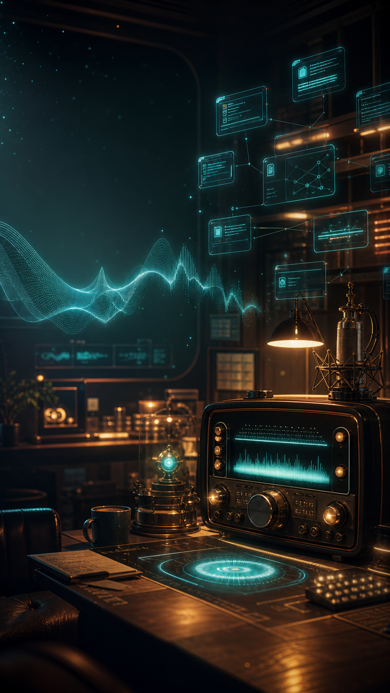

AI work proof
AI work should leave evidence.
DoneGraph turns every agent session into a replayable trail: what changed, what ran, what passed, and exactly where to continue.
For vibe coders
For solo builders
For AI-native teams
12saved actions from the real demo run
3commands passed and kept beside the work
5files traced so handoff starts warm
Replayable proof for AI-built work01 / Product value
After the task
The AI writes the day back to you.
No more digging through a long chat. DoneGraph writes a recap letter with the work, the proof, and the next place to begin.
“I saved what happened. Tomorrow does not have to start cold.”
The letter turns raw agent activity into a human handoff: touched files, passed checks, loose threads, and a calm next step.
01Open the letterSee what the AI actually did after the work ends.
02Trust the proofCommands and files stay attached to the recap.
03Resume cleanlyYou, a teammate, or another AI can pick up the thread.
AI work with emotional closure02 / Letter scene

Ambient agent radio
Your AI has an after-work voice.
DoneGraph Radio turns a finished run into a soft monologue with music: what it received, how it handled it, what it learned, and what you can do next.
ZH / ENbilingual roaming for global demos
Voicemale, female, and narrator styles
BGMmusic under the agent's thoughts
This is not another dashboard. It is the proof layer for the age of AI agents.
When AI starts doing real work, humans need more than a final answer. They need replay, proof, and a way to feel where the work landed.
Listen to the run after it finishes03 / Radio scene